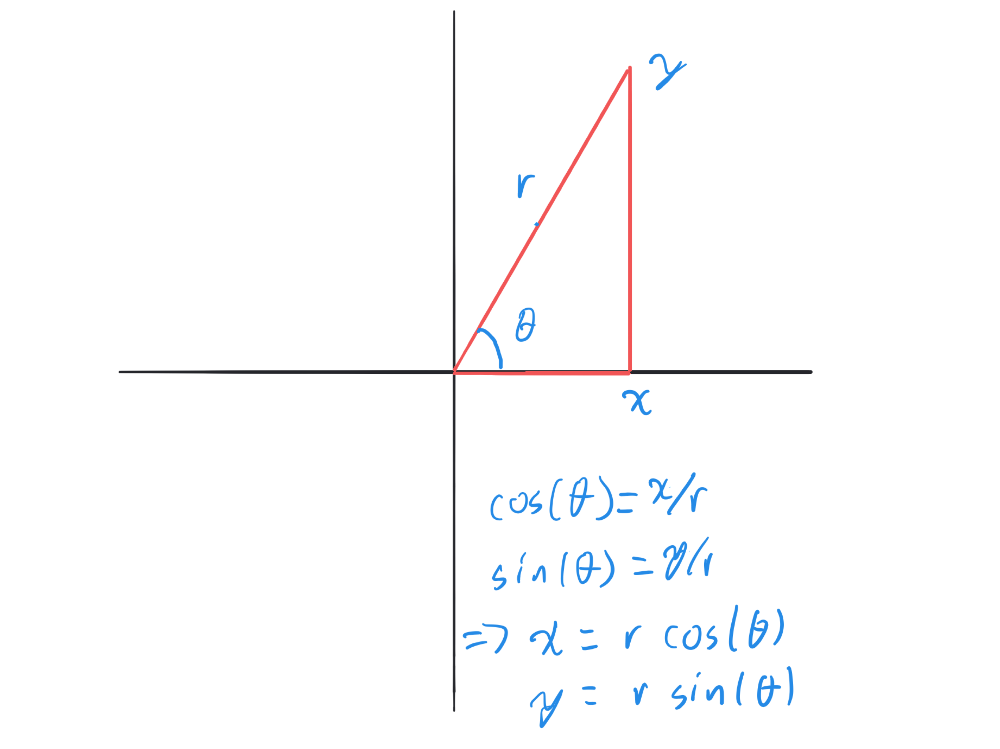

4.2. MAT2VCA Computer Lab 2#
In this lab we will gain experience with parametrizing lines and circles. We will mostly think of these as sitting within the \(xy\) plane, but more generally they could be sitting within a higher dimensional space.
Lines and circles and many other curves are 1-dimensional objects. We can mark a numberline along a curve, so that each point on the curve is associated with a numerical value, which we can call \(t\). Then the \(x\), \(y\) (and possibly \(z\)) coordinates can be thought of as functions of \(t\).
Often, it’s useful to think of an object moving along the curve in time in which case \(x(t)\) and \(y(t)\) give the coordinates of the object at each time \(t\). For example, the \(x\) and \(y\) coordinates of a vehicle driving through a city can be thought of as functions of time. At each time \(t\), the function \(x(t)\) gives the corresponding \(x\) coordinate and \(y(t)\) gives the \(y\) coordinate.
Other times, it may be useful to think of the distance \(s\) along the curve from some starting point. Then \(x(s)\) and \(y(s)\) give the coordinates of the position on the curve that is distance \(s\) from the ‘start’. We can think of this using a moving vehicle analogy as well. If we give directions like like “follow the road for 1.5km” - if we know the path then the distance \(s\) tells us exactly what \(x\) and \(y\) coordinate the vehicle has reached, so we can think of \(x(s)\) and \(y(s)\) as functions of \(s\).
4.2.1. Goals for this lab:#
Parametrize the line segment between two points \(A\) and \(B\) using \(t \in[0,1]\).
Parametrize a line in terms of distance \(s\) from a given point \(A\) and the unit vector in the direction of the line \(\vec{u}\). This will be important for understanding cross sections in arbitrary directions, which is needed to understanding the slope in different directions and its relation to the gradient vector (lecture 3B).
Parametrize a circle of given radius and center in terms of the angle \(\theta\). This will help in understanding cylindrical and spherical coordinates and in parametrizing surfaces later in the subject.
4.2.2. Parametrizing lines#
4.2.2.1. Line segments#
Consider two points \(A=(x_A,y_A)\) and \(B=(x_B,y_B)\) connected by a line segment. Imagine an object (or an individual) moving along the line segment with constant velocity so that at time \(t=0\) it is at \(A\) and at time \(t=1\) it is at \(B\).
Then at time \(t=1/4\) it is a quarter of the way from \(A\) to \(B\). At time \(t=1/2\) it is halfway to \(B\). At time \(t=3/4\) it is three quarters of the way to \(B\).
How can we plot these points? Let’s start with specific values \(A=(0,0)\) and \(B=(2,3)\) and plot them as red circles. The fact that \(A\) is the origin will make our calculations a little simpler for a bit.
A=[0,0]
B=[2,3]
plot([A(1),B(1)],[A(2),B(2)], 'ro') %the 'r' tells matlab to use red and the 'o' tells it to use a circle.
xlim([-0.2, 2.2])
ylim([-0.2, 3.2])
Now calculate by hand the points 1/4, 1/2, and 3/4 of the way from \(A\) to \(B\). Call these points \(C\), \(D\), and \(E\). Then we plot \(A\), \(B\), and these points as circles.
C = []; %fill this in
D = []; %fill this in
E = []; %fill this in
xs = [A(1), B(1), C(1), D(1), E(1)];
ys = [A(2), B(2), C(2), D(2), E(2)];
plot(xs, ys, 'ro')
xlim([-0.2, 2.2])
ylim([-0.2, 3.2])
Can you find a formula for the point \((x(t),y(t))\) that is a proportion \(t\) (where \(0\leq t \leq 1\)) of the way from \(A\) to \(B\)? If so, enter it in the box below.
Enter the fomulas here:
x = … y = …
Now we’re going to use an efficient way to plot a bunch of dots between the two points.
t = [0: 0.1: 1];
x = t*B(1);
y = t*B(2);
plot(x,y, '.') % the '.' means just a dot at each point.
xlim([-0.2, 2.2])
ylim([-0.2, 3.2])
Look at the values that \(t\), \(x\), and \(y\) take. Spend the time to understand why the plot looks like it does. This may confirm the formula you found before for \((x(t),y(t))\). If not, spend some more time thinking about it.
Now what happens if \(A\) is not at the origin? Say that \(A=(-1,1)\) and \(B=(1,4)\)?
A=[-1,1]
B = [1,4]
plot([A(1),B(1)],[A(2),B(2)], 'ro')
xlim([-1.2, 4.2])
ylim([-1.2, 4.2])
daspect([1,1,1]) %aspect ratio of 1
Notice that for this specific example, the step from \(A\) to \(B\) is exactly the same as in the previous example.
We’ll make an observation that if we treat \(A\) and \(B\) as vectors (rather than coordinates of points), then \(A+(B-A) = B\). \(B-A\) is the vector from the point \(A\) to the point \(B\). When we talk about going some fraction \(t\) of the way from \(A\) to \(B\), we’re talking about adding that fraction of the vector \((B-A)\) to the vector \(A\).
t = [0: 0.1: 1];
x = A(1)+t*(B(1)-A(1));
y = A(2)+t*(B(2)-A(2));
daspect([1,1,1])plot(x,y, '.')
xlim([-1.2, 4.2])
ylim([-1.2, 4.2])
daspect([1,1,1])
You should see that the formula for a point \(P(t)\) that is a fraction \(t\) of the way from \(A\) to \(B\) is
where we interpret these as vectors.
So to describe the set of all points on the line segment from \(A\) to \(B\), we can use
This means the set of all points that can be written in the form \(A+t(B-A)\) for some value of \(t\) between \(0\) and \(1\). Alternately, sometimes we write
which means that the function \(\gamma(t)\) gives the coordinate of the point corresponding to \(t\) for values of \(t\) within the given range.
We call this a parametrization of the line from \(A\) to \(B\).
4.2.2.2. Self test#
Plot 5 equally spaced points between the two points \(A=(-4,5)\) and \(B=(2,-3)\) as red dots, (including the end points) and find a parametrization for this line.
Find a parametrization for the line in the opposite direction (i.e., it starts at \(B\) at \(t=0\) and ends at \(A\) at \(t=1\)). Plot 6 equally spaced points including the end points using this parametrization as blue squares
Explain the statement: “The parametrization can be thought of as a new coordinate system for points on the line that assigns a number between 0 and 1 to each point on the line segment. The rule \(A+t(B-A)\) translates from this new coordinate to our standard coordinates.”
Give your answer here:
4.2.3. Infinite lines#
Consider a point \(A=(x_A,y_A)\) and a unit vector \(\vec{u} = (u_1,u_2)\). (the term ‘unit vector’ means that the length of the vector is \(1\)).
We would like to draw a line through \(A\) that goes in the direction of \(\vec{u}\). We will use \(s\) to denote the distance of a point on this line from \(A\) and we will try to find the coordinate \((x(s),y(s))\).
Because the length of \(\vec{u}\) is \(1\), the length of the vector \(s\vec{u}\) is \(s\) for positive values of \(s\), and \(|s|\) for negative values of \(s\). The positive values of \(s\) correspond to the direction that \(\vec{u}\) points, while negative values correspond to the opposite direction.
Let’s take \(A=(2,3)\) and \(\vec{u} = (3/5, 4/5)\) (which has magnitude \(1\)).
Set \(P\) to be the point \(A + 5\vec{u}\)
A = [2,3]
u = [3/5, 4/5]
P = A + 5*u
Use the pythagorean theorem by hand to check that the distance between \(A\) and \(P\) is \(5\).
Write out your explanation here:
To use Matlab to find the distance between two points you can use the following command, without going through the Pythagorean theorem by hand… The command norm gives the geometric length of a vector.
norm(A-P)
Now we’ll plot all points within distance \(5\) of \(A\) in the direction of \(\vec{u}\) or \(-\vec{u}\).
s = [-5:0.2:5];
x = A(1) + u(1)*s;
y = A(2) + u(2)*s;
plot([A(1)], [A(2)], 'ro')
hold on
plot(x,y)
So the line is the set of points of the form
We can also write this as
This is fine if the vector you have is a unit vector. What if you’re given the point \(A=(2,3)\) and the vector \(\vec{v} = (3,4)\), where \(\vec{v}\) is not a unit vector?
One option is to just do exactly the same calculation as was done with \(\vec{u}\) above, but in this case the parameter \(s\) represents multiples of the length of \(\vec{v}\). If we want \(s\) to represent a distance (which we often do), then we replace \(\vec{v} = (3,4)\) with \(\vec{u} = \vec{v}/\|\vec{v}\|\). This will always give a unit vector in the same direction as \(\vec{v}\). Then we can continue as we did above.
A = [2,3]
v = [3,4]
u = v/norm(v)
s = [-5:0.2:5];
x = A(1) + u(1)*s;
y = A(2) + u(2)*s;
plot([A(1)], [A(2)], 'ro', label = 'A')
hold on
plot(x,y)
legend()
4.2.3.1. Self test#
Find a parametrization of the line through the point A=(1,-1) in the direction of \(\vec{v} = (1,1)\) where the parameter \(s\) denotes the distance from \(A\) to a given point. Plot points on the line of distance at most 10 from \(A\).
4.2.4. Circles#
Let’s try to plot the circle of radius \(1\) centred at the origin:
We’re going to first try a naive way and see that it is not as good as another approach.
The natural thing to do, since we’re used to plotting functions is to express \(y\) as a function of \(x\). We can write \(y^2=1-x^2\) and so
where \(-1\leq x \leq 1\).
Let’s try to plot this. In a sense, we are treating the circle as if the parameter we are using is the \(x\)-coordinate.
x = [-1:0.1:1];
y = sqrt(1-x.^2);
plot(x,y, 'k') %'k' means black.
hold on
y = -sqrt(1-x.^2);
plot(x,y, 'b') #`b` means blue.
daspect([1,1]) %this sets the 'aspect ratio' so that the x and y distances are the same. Otherwise it looks like a squashed circle.
Notice that when we do this, we have to use two plotting commands because the circle is not a simple function of \(x\), but instead can be thought of as two functions. We’ve had to use a parameterization for the top half and a different parameterization for the bottom half of the circle. You’ll also notice that close to \(x=-1\) and \(x=1\), the circle is not very smooth. It becomes clearer why if we plot the points themselves rather than lines.
x = [-1:0.1:1];
y = sqrt(1-x.^2);
plot(x,y, 'ko')
hold on
y = -sqrt(1-x.^2);
plot(x,y, 'bo')
daspect([1,1])
Notice that the points are not equally spaced on the circle. Their \(x\)-coordinates are equally spaced, but that results in very different geometric lengths. They are farther apart near \(x = \pm 1\).
We would like to use a parametrization for which a given change in the parameter corresponds to the same distance regardless of the parameter value. To do this, we’ll use the angle as the parameter.

For a given point on the circle, we set \(\theta\) to be the angle between the line from the point to the centre of the circle and the \(x\) axis. Then for this circle of radius \(1\) centred at the origin, \(x = \cos(\theta)\) and \(y = \sin(\theta)\). For this \(\theta\) goes from \(0\) to \(2\pi\) (that is \(0^\circ\) to \(360^\circ\)).
So we are labelling points by the corresponding angle. This is similar to how we label points on the Earth’s surface. If you are talking about a point on the equator, you can identify exactly which point it is by using the Longitude, which is a measure of angle. You don’t ever think about the (x,y,z) coordinates of the point.
theta = [0: pi/20: 2*pi];
x = cos(theta);
y = sin(theta);
plot(x,y, 'ko')
daspect([1,1])
If we want the circle to have a different radius, \(r\), we need to use \(r\cos(\theta)\) and \(r\sin(\theta)\).
If we want to shift the centre of the circle to another point \((x_c,y_c)\), then we need to add \(x_c\) to all the \(x\) coordinates and \(y_c\) to all the \(y\) coordinates.
So for a circle of radius \(5\) centred at \((3,4)\) we have
theta = [0:pi/20:6*pi];
x = 3 + 5.*cos(theta);
y = 4 + 5.*sin(theta);
plot(x,y)
daspect([1,1])
(notice that this circle goes through the origin — can you see why?)
4.2.4.1. Self Test#
plot a circle of radius \(1/4\) centred at \((2,3)\). Be sure to use daspect([1,1]) to ensure that the aspect ratio is 1.
What do you think happens if we use different values for \(r\) in the \(x\) and \(y\) coordinates? Test your prediction.
4.2.4.2. Extension#
See if you can modify the plots of circles so that they become spirals going out of the origin (hint, the radius should depend on the angle).
Can you make the spiral go around many times?
The command
plot3(x,y,z)will plot similarly to a 2 dimensional plot, but in 3D. Can you use this to plot a helix that looks like a circle from above and does exactly 3 full rotations?Can you plot a double helix like a DNA molecule? In a double helix, one helix is rotated by \(\pi\) compared to the other.